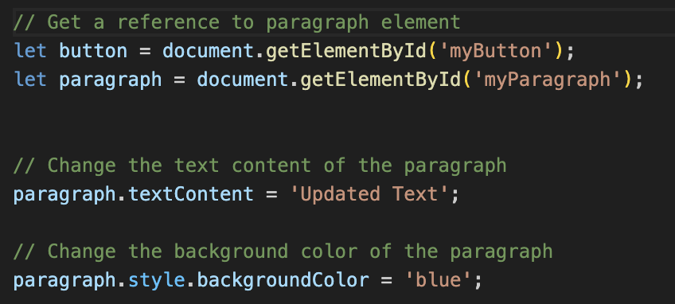
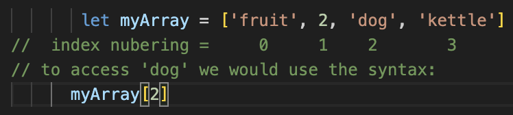
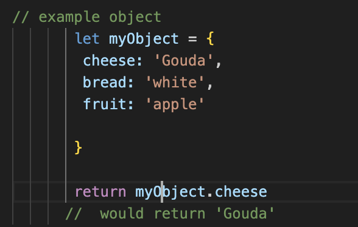
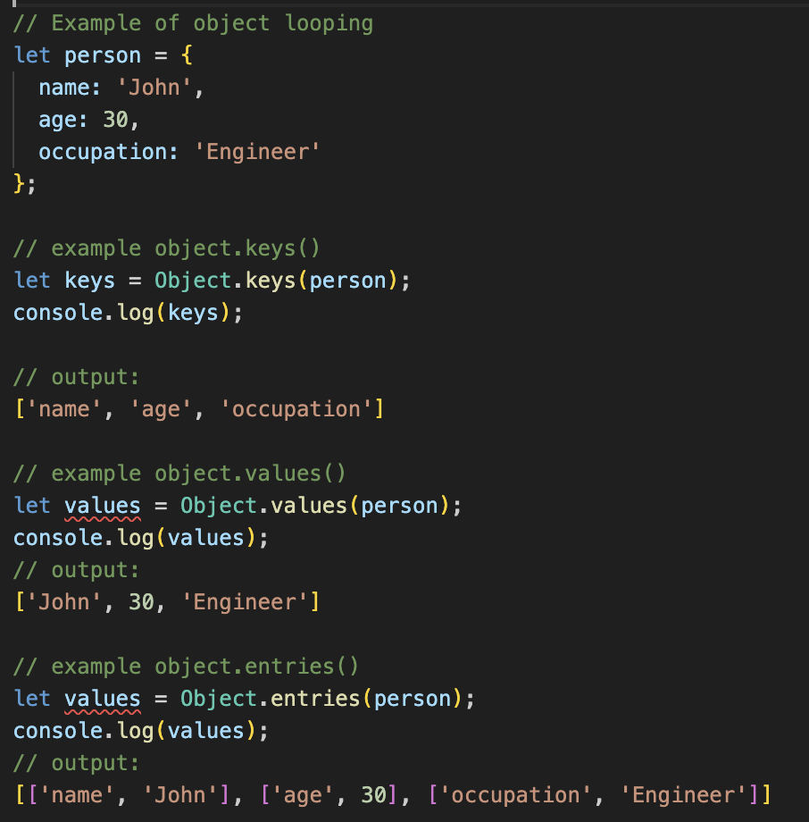

Javascript & the DOM
How does Javascript relate to HTML and CSS?
If HTML defines the main structure of a web-page, and CSS defines its
styling, Javascript is responsible for the any actions that take place
within a page. That might be bringing up warning messages, changing
the way an element looks, responding to text inputs, and many many
more things. Javascript interacts directly with the HTML file of a
page, altering elements within it, but does not interact directly with
the CSS file of a page. Instead it can alter the styiling of a page by
modifying which CSS are applied to what elements of the HTML.
An analogy could be to a car - the HTML would represent the parts and
their position, the CSS whether they are fixed or free to move and the
color, and styling of those parts, and the JavaScript is how we
interface with the car. E.g. what action occurs when we push the
accelerator or the break? The light that comes on when we are low on
fuel etc
Control flow & loops
Control flow refers to the order in which statements and executed for given code. Typically a computer will read the code systematically, from top to bottom and execute the each section as it reads it. However, various statements in the code will alter the flow of the code is read and what is executed. Imagine the flow of data through the code as water. Usually it flows down hill, simply finding its way to the bottom, unless it encounters some sort of obstacle, this could be a statement of some sort.
Conditional statements:
These statements include if,else, and
else if, and when the computer incounters one of these
statements the flow of the code is altered depending on whether the
statement is true of false. In the case of conditional statement ou
water has reached a set of doors, leading in different directions.
Depending on what has occurred, any of the doors could open, but on
any given occassion, only one will open,csending the water in one
direction.
Loop statements:
These statement allow you to repeat a block of code for a defined set
of conditions is met, or for a specific number of times. Loop
statements include for, while and
do...while. In a for loop, the code repeats for each
of the objects in a set, or a specific group of objects from a larger
set. If our water meets a loop statement it would be like there are a
set of cups it has to fill, before being able to continue downwards
through its path
The DOM
The Document Object Model (DOM) is a structure where every single element of an HTML file is given a specific object representation, and all those objects are aranged with a specific heirarchy. Javascript interacts with the HTML file via the DOM. When we use Javascript to refer to an aspect of the HTML, we do so using its object representation. The document object is the typical access point to the html elements, and we reference it in JS to access the html elements within
We can use JavaScript and the DOM to do almost anything to the way our HTML displays on screen. In the below example the getElementsById() method searches the DOM for the object representation of the HTML element with the ID='myParagraph'. We can then use Javascript to manipulate the HTML, in this case changing the text content, and the background color.

Data as arrays and objects
Accessing data from arrays:
Arrays are ordered collections of values, where each value is assigned
a numeric index starting from 0.
To access data from an array, you use square brackets [] with the
index value inside to specify the position of the desired element.

It is simple to loop through data in an array using the
for command, or to change data in arrays using:
push() which adds new elements to the array;
pop() which removes the last elemnt from the array and
returns that element; slice(a, b) which extracts a defined
portion of the array (from index value 'a', to the index value
preceding 'b')and creates a new array, but leaves the original array
unalteredl; and splice(x, y) which creates a new array
starting with index value 'x', and includes 'y' number of values. The
values in the new array are removed from the original array.
Accessing data from objects:
Objects are collections of 1 or more values where each value has a
unique property name (key).
To access data from an object, you
use dot notation (object.property) or square brackets [] with the
property name inside (object['property']).

Looping through objects requires different commands than arrays. One
option is a "for...in" loop which will iterate over the object based
on the specifics of the command. Object.keys() - returns an
array of the property names of an object. Object.values() -
returns an array of each of the values of an object.
Object.entries() - returns an array of each of the key-value
pairs of an object, where each pair is represented as a sub-array.

Functions
Functions are blocks of code that can be defined and called to perform a specific task or set of tasks. They are like a set of instructions to perform a specific task that will be performed everytime the name of the instruction manual is referenced.
Benifits:
- Reusability: Allows you to write a piece of code once and reuse it multiple times throughout the program
- Modularity: Helps break down complex tasks into smaller, manageable units. This makes things easier to understand and debug
- Isolation: You can define elements within a function such as variables, that only exist in the context of the function, making it easier to isolate things with sections of the code
- Readability: Can make it easier to follow code with well named and indented functions.